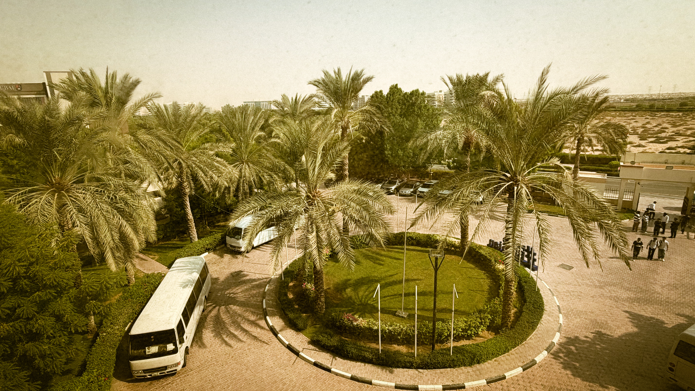
If BPDC Was a Small Town
It never asked to be one.
It just quietly became one.
A town with an entrance,
a market, a town hall, a stadium,
places to gossip, places to wander (even if it’s limited).
The Roundabout
Every town has a way in.
Every day starts here,
one way or another.
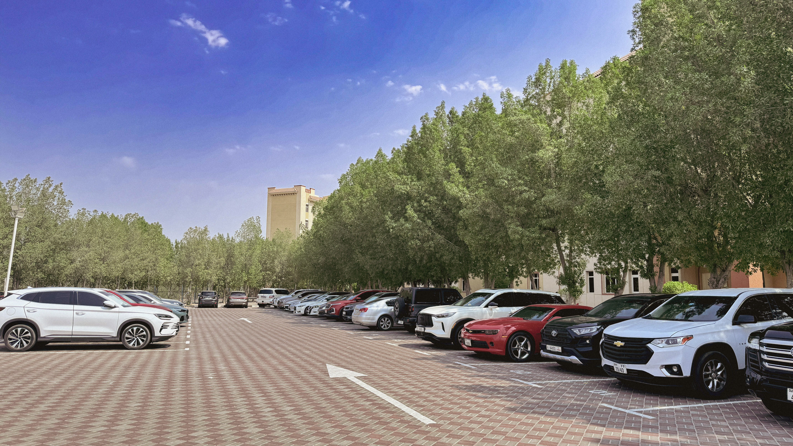
The Colonnade
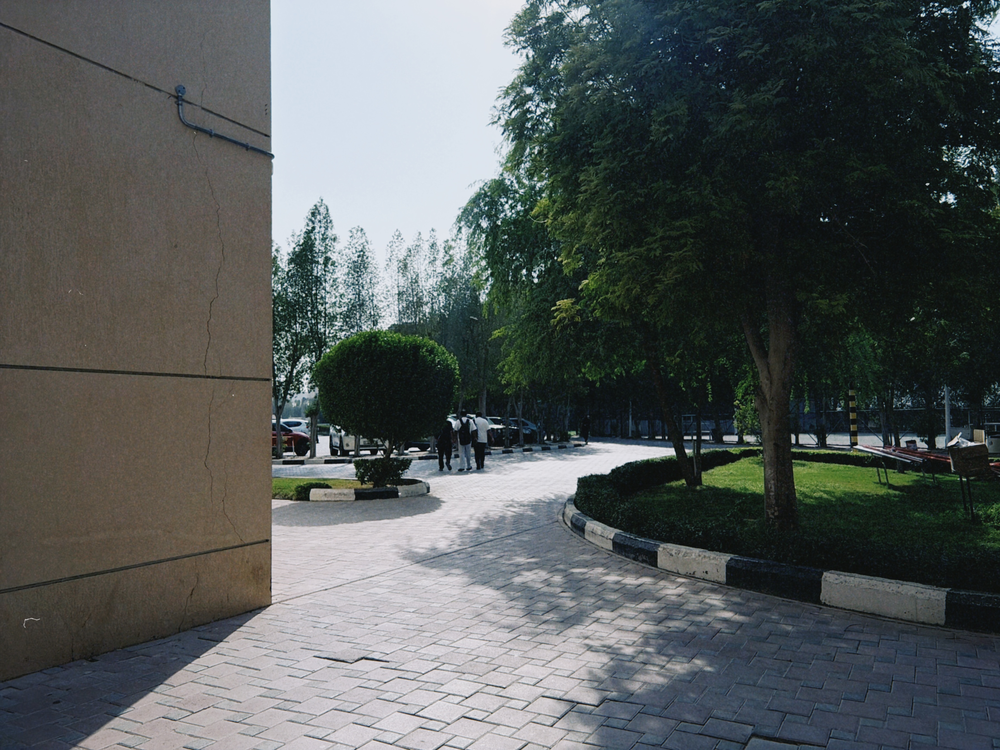
You walk in,
and the town makes sure you know exactly where you are.
The name is on the wall
before you've taken three steps.
By eight,
everyone is moving like they're already late.
The town is awake.
The Canteen
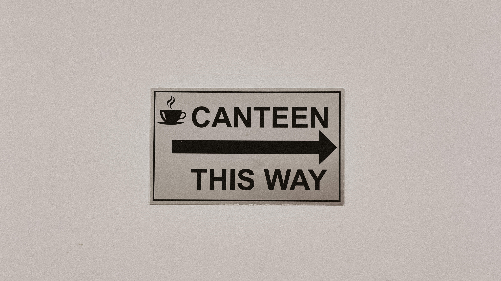
The canteen has a reputation.
Ask anyone who's been here longer than a semester
and they'll tell you it used to be better.
Somehow,
everyone still ends up here.
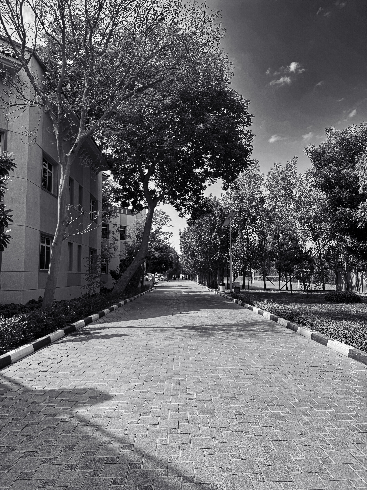
Fifteen minutes between classes
and the line is still fifteen minutes long.
Business is always good.
The Gathering Place
Every town has somewhere
where everyone eventually passes through.
Someone's always late.
Someone's always explaining why.
Announcements happen.
People meet.
People wait.
And somehow,
half the town seems to know what happened
before anyone actually says it.
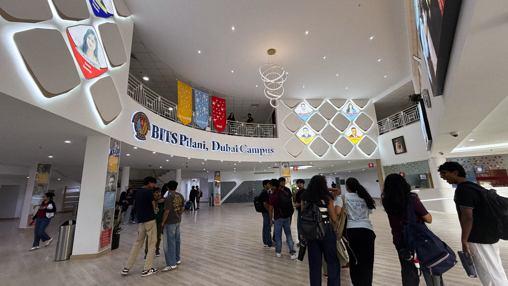
The Court
Every town needs somewhere to play.
Want to play badminton?
First, find whoever has the rackets.
Need a place to take a break in between of classes?
You’ve come to the right place.
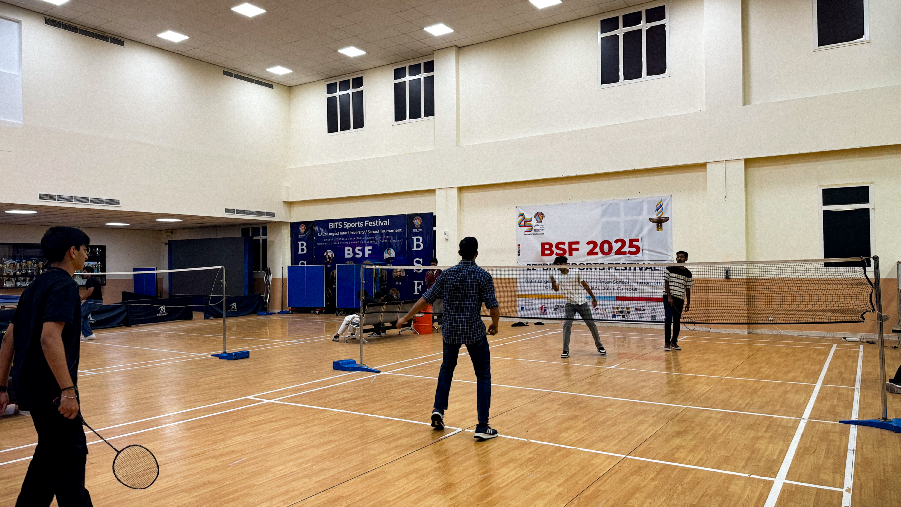
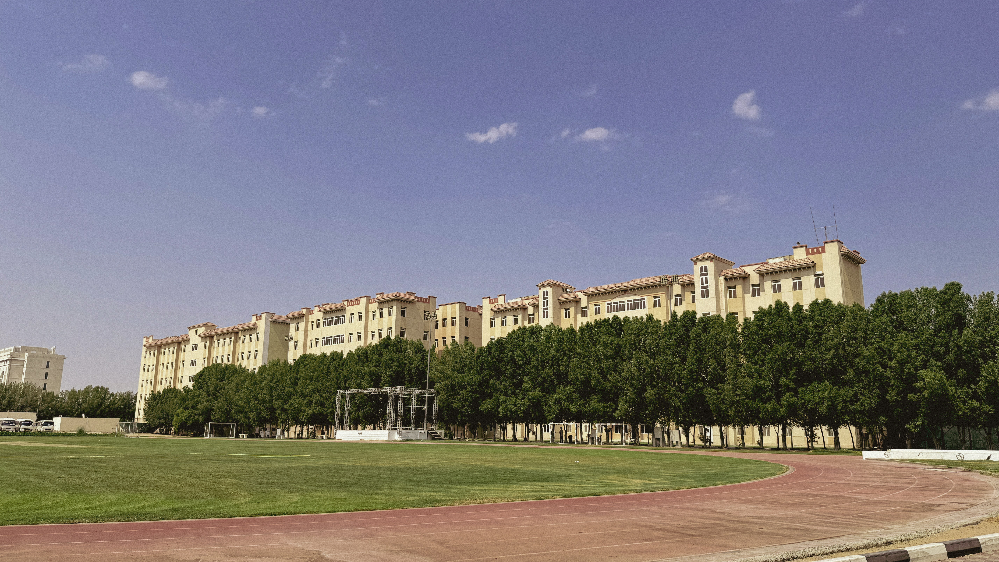
The Steps
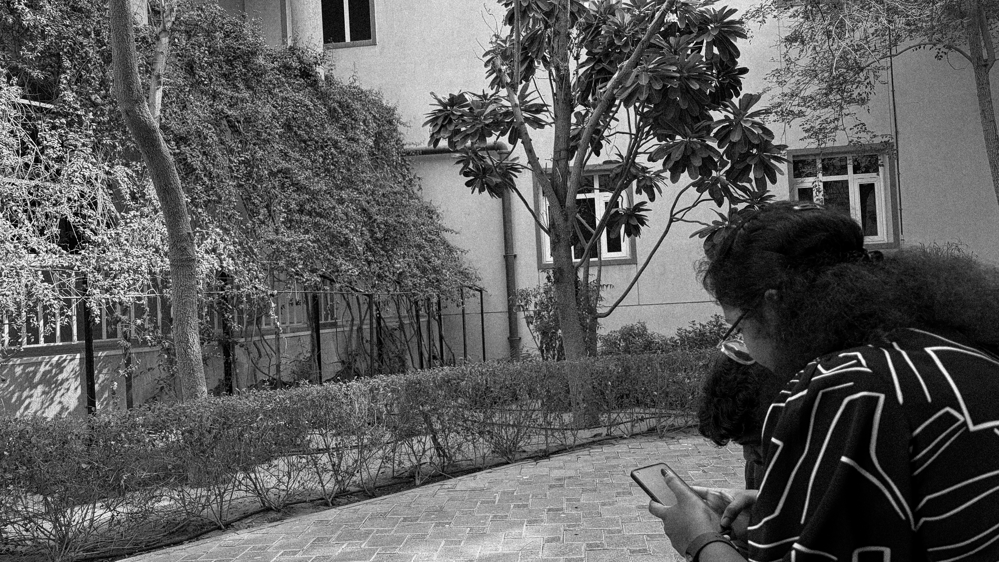
Every town has a place
where fifteen minutes quietly becomes an hour.
Nobody is spreading rumours.
They're just catching up.
About the quiz.
The canteen.
Someone's assignment.
Something that happened five minutes ago.
News travels quickly
when everyone already knows everyone.
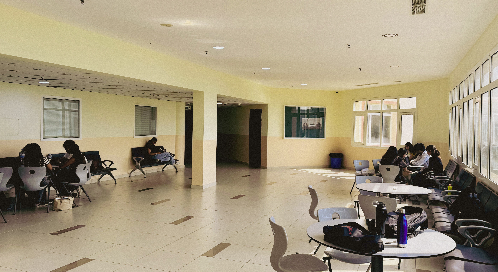
The Stall
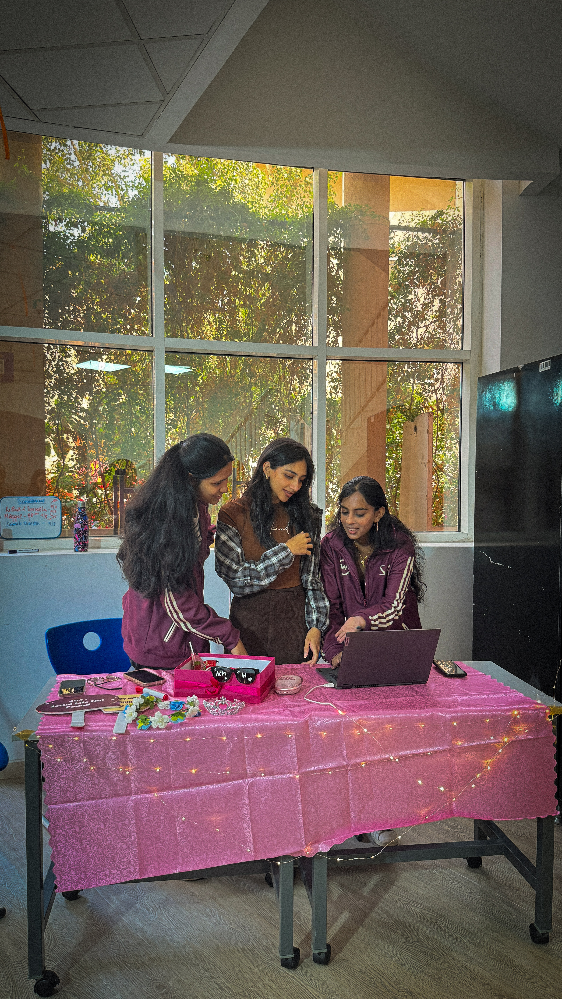
Every town has stalls.
A tablecloth.
Some lights.
A laptop.
A cause.
You stop for ten minutes
to see what's happening.
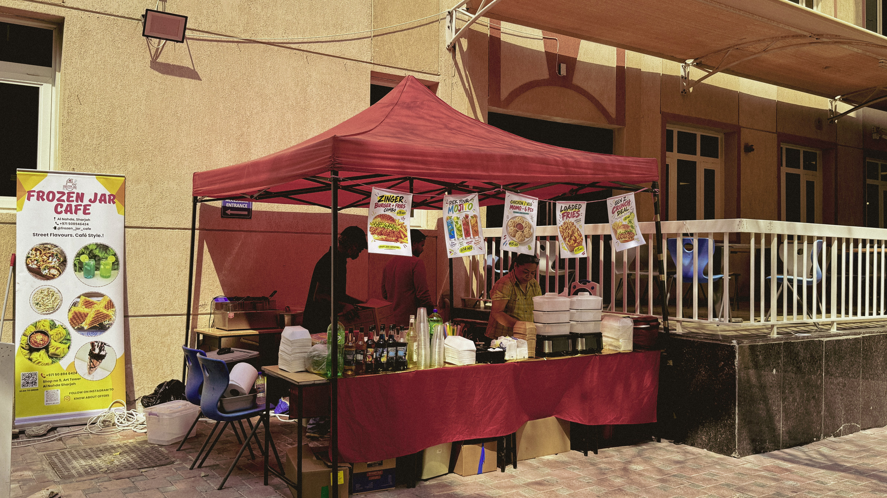
The Corner Shop
Every town has a little shop
where you go because you need one thing.
You go in for one drink.
You come out questioning
your financial decisions.
The town gets you eventually.
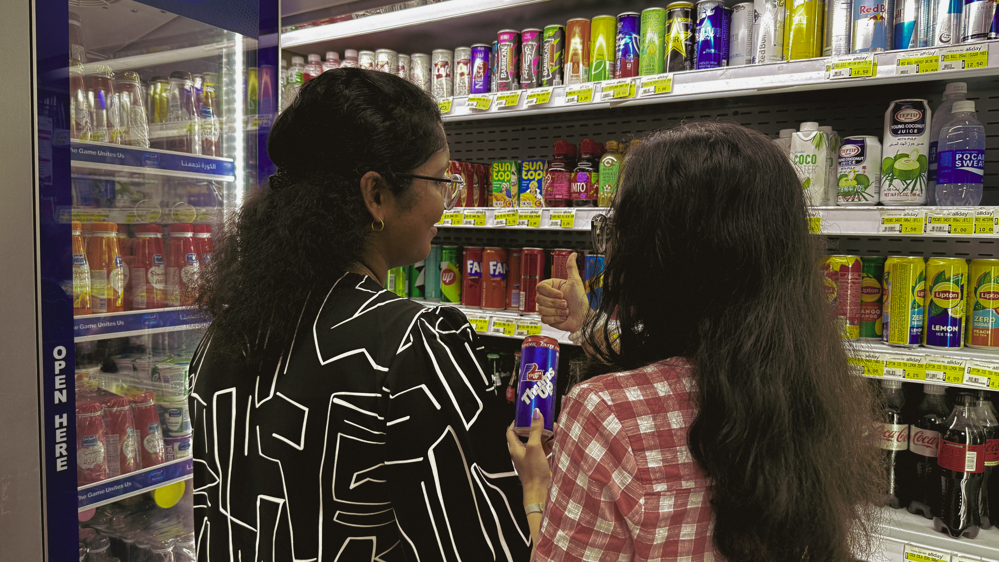
The Last Bus
By evening,
this becomes the town square.
Everyone is here.
Not because the buses are late.
Nobody is quite ready to leave yet.
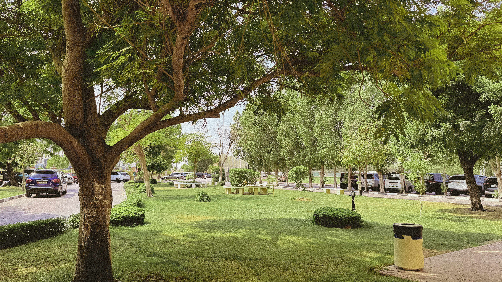
The day gets debriefed here:
Who bombed the quiz.
Who's skipping tomorrow.
What happened at the canteen.
Who saw whom.
The vans wait.
The conversations continue.
Eventually,
everyone goes home.
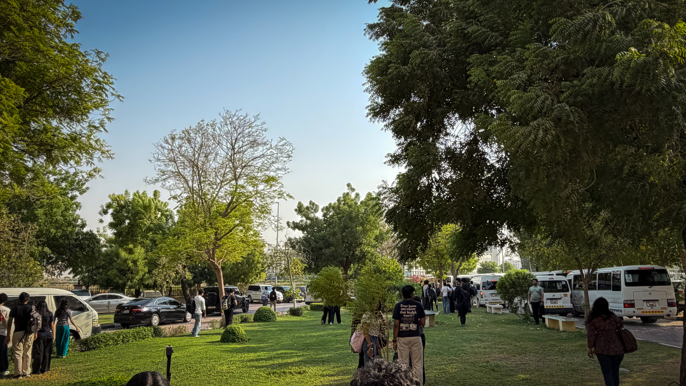
Tomorrow
The town becomes quiet again.
The roundabout looks exactly the same.
Tomorrow,
it will start all over again.
The same streets.
The same places.
Mostly the same people.
And somehow,
it will still feel like another day in town.